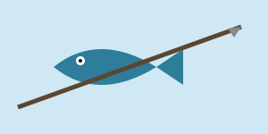

Why spearfishing
It is the quietest way I know to be in the sea. No engine, no line, no bait — just breath-hold diving and a lot of waiting.
What I like about it
- You only take what you can reach on one breath.
- It is selective in a way that netting never is.
- The diving itself is most of the appeal.
The fish

><(((º>